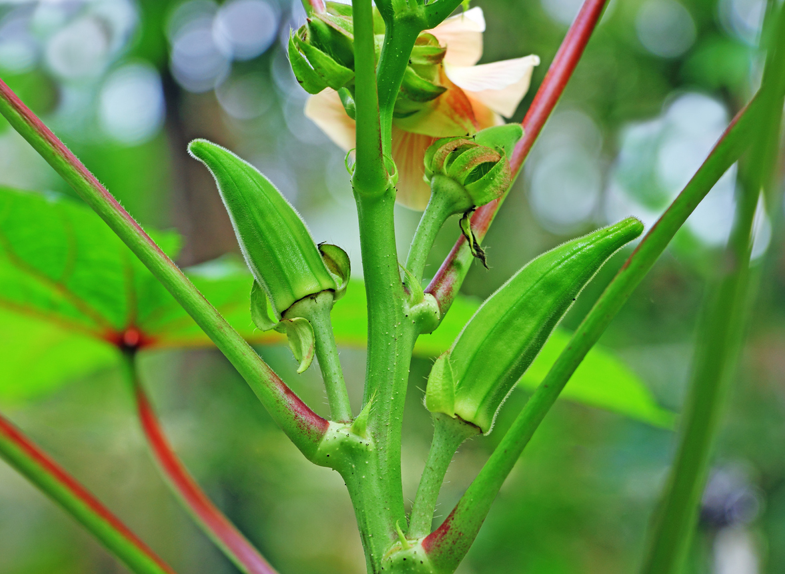

Okra, also known as lady finger, is a warm-season vegetable that produces long green edible pods. It grows well in tropical climates and can be planted in pots or home gardens. Okra is commonly used in soups, stir-fries, and curries.
Needs full sunlight (6–8 hours daily) for strong growth and pod production.
Water regularly to keep soil moist but not waterlogged.
Best growth at 25°C – 35°C. Thrives in hot conditions.
Use fertile, well-draining soil rich in organic matter.
Harvest pods when they are young, tender, and about 5–10 cm long.
Used in soups, stir-fries, curries, and traditional dishes
Cause: Nutrient deficiency or overwatering.
Solution: Add fertilizer and adjust watering.
Cause: Fungal infection.
Solution: Improve airflow and avoid wet leaves.
Cause: Underwatering or root stress.
Solution: Water regularly and maintain soil moisture.
Cause: Common pests feeding on leaves.
Solution: Use natural pest control or soap spray.
Cause: Late harvesting.
Solution: Harvest pods early when tender.